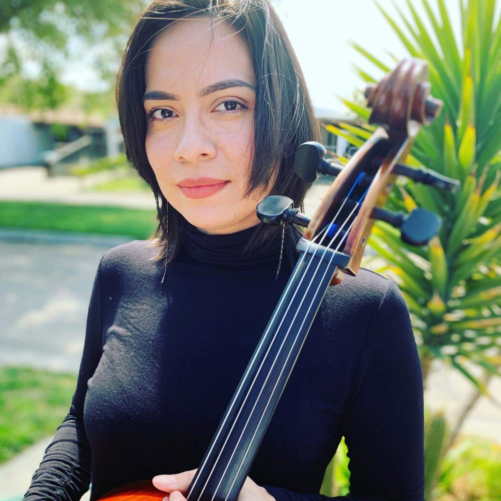

About Me
Hi I'm Cristy. I'm a cellist living in Monterey County. Since childhood I have loved music. So much so that I went off to study it professionally. I earned my Bachelor's degree in Music Education. During my time at San Jose State University, I studied with some of the best cellists in the Bay Area. Some notably are: Tonya Thomkins, David Goldblatt, Peter Gelfand and Adelle Akiko-Kearns. Currently I perform in two symphony orchestras: The Hartnell Community College Orchestra in Salinas and the Cambrian Symphony in San Jose. All of these amazing experiences have brought me deep fulfillment and I love sharing that. I've taught music in private and public settings for over ten years now.
I am currently accepting dedicated student cellists for private lessons. Whatever your musical goals are, whether performing for an audience or for your self, I can help you achieve them.
I also do performances. Please contact me to talk about your next event!